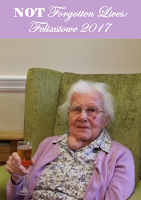
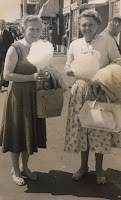

{kind=link}

Chrissie Harris – the cover girl for Golden Duck’s forthcoming publication NOT Forgotten Lives: Felixstowe 2017 – is 103 years old. This means she has already survived twenty Prime Ministers (not counting repeats) two world wars and any number of domestic and international crises. I find it comforting to think of Chrissie, living "happily confuddled" in a Felixstowe care home, as I write this on General Election day, June 8th 2017. Elsewhere there's a pervasive sense of political and economic insecurity and the threat of terrorist attack still officially classified as “critical”.
I’ve never met
Chrissie but I’m certain that she is a very
wise woman.That's not just because, at this stage, she may be taking the long view about the relative importance (or not) of staying up all night to watch election results which are going to happen anyway... but mainly because Chrissie had the great good sense to write down some
of her own life recollections before "confuddlement" came on. Here’s a sample from our forthcoming booklet:
My parents
had eleven children, but two died at birth. My oldest brother Ernest fought in the
1914-18 war, but died of pneumonia when he was thirty two. My brother George died
of pneumonia when he was nineteen My sister Eva died of diphtheria at the age of seven,
before I was born. My brother Reginald was killed in a car accident when he was thirteen, he was a twin so it was especially hard on his twin, Doug.
Times were
hard for us on a farm labourer's wage so we had rabbits for food, and grew fruit
and vegetables in the garden. We also had five chickens and kept a pig which we
killed for food, which we shared with others. All of us lived in a two-bedroom
cottage with no indoor toilet, no bathroom and no water indoors, so it was very
hard for my mother with two sets of twins to look after, let alone the rest of
us.
Standard for the period – well yes, maybe. When my mother and I
were collecting and editing the Age Concern essays, back in the mid 1980s, there was much mention of
rabbit as a staple of the older country dweller’s diet. But today, in 2017, Chrissie’s facts of life seem to come
from a different world. Look at that family size, those deaths, that two-room
cottage! (H.H. Asquith was PM when Chrissie was born, in case you wondered. Then David Lloyd
George as the WW1 carnage began to mount.) Now, in 2017, life expectancy is possibly going up even faster than WW1 brought it down. That's probably not a scientific figure. The only statistic I can remember (as the TV in the next room churns out swings and exit polls) is that a child born in the UK
today has a 1 in 3 chance of living to Chrissie’s age. No wonder the political parties are shying away from any serious policies on elder care (bring back Lloyd George, say I).
What Chrissie's story reminds me is that, in 2017, our UK residential
homes are already full of these living repositories of social history. Every day when I visit the nursing home where my mother lives I meet the Irish centenarian who was born in the year of the Easter Rising. She's tiny, frail, a bag of bones if you spot her on a rare quiet day but how she still strikes fear in English
hearts when her wheel chair comes rocketing down the corridor. My son Bertie overheard her setting a care-worker straight: "Get out or I’ll
slaughter you!” were her reported words. I cherish this lady and long to know almost any details of her history as she alternately demands a priest to hear
her confession or the police to make an arrest. But she
too is confuddled. Her emotions are powerful but
chaotic. I don’t know anything about the facts of her life I don’t know who to ask.
NOT Forgotten Lives
is a project for this year's Felixstowe Book Festival -- do join us on July 1st at the Orwell Hotel. It has developed from the Life Stories Network training day that I attended a couple of months ago. A handful of the stories in our booklet (like Chrissie’s) are properly autobiographical but most are
“ghost-written” by care-workers or family members. Be good to your children not just because they’ll be choosing your care home – but because they might be writing the life
story that you take in there with you. You'll have forgotten the dates and details: will you therefore be forgotten? Because the more the care-workers know about you the better your care is likely to be.
Care homes have changed / are changing as confuddlement spreads. Here's Alison Hudson, a Felixstowe care home manager writing in NOT Forgotten Lives.
I have worked
at White Gables Residential Home, Felixstowe, for almost thirteen years. I can
specifically remember one day a number of years ago hearing a very eloquent
speaker give a presentation about the rise of dementia in the U.K and the
consequent effect this would have on care homes.
Now, in 2017,
I can see the real difference, where the residents we are seeing generally have
a dementia diagnosis. This has meant that we have had to do a lot of learning,
both through experience and training to discover the best way to be able to
care for individuals with dementia.
Putting this modest booklet together has not been an easy project. Care home managers and their staff are under a frightening degree of strain: families are uncertain and distressed; the people at the heart of the project are enduring a disease that threatens their very self. Only six of the sixteen residential homes in Felixstowe finally managed to participate -- not a great turnout -- though, as ever, the reasons for that are more interesting than the stark %. I feel that I've learned a great deal from the process of this project and I hope to share that in the final product. The facts of people's lives matter -- and so do their feelings about them. Caring successfully for people with dementia demands a degree of personal knowledge that care home residents, unaided, will no longer be able to give. Those who are wise - like Chrissie -- will set down in advance as many salient facts as come to mind, not just for their own and their families' better knowledge but for all of us who are privileged to share their world.
 |
| Chrissie and friend in earlier seaside days |
{kind=link}
Meanwhile we must also ensure that they are not trapped as museum exhibits. Their lives are not over, just because they have moved into residential care. As another Felixstowe care home manager wrote
"What I'd like is for relatives etc to understand that the more information we have on someone the better we can care for them in a person centred way; that it's not just the basics we need and that with dementia their choices and preference can change. For example someone who has never taken sugar in their tea will develop the sweet tooth of their childhood, or a demure person may start to choose bright red nail polish."
So what will these next days bring to Chrissie and her peers and all the rest of us? A new Prime Minister perhaps? Or the freedom to change your nail polish preferences, even at 103?
But it's night night for now - it's 0100 June 9th 2017 and I'm off to watch the election results -- even if they may not mean so much in the rolling by of the centuries to come.
Julia Jones will be talking about her book Beloved Old Age and What to Do About It at the Felixstowe Book Festival July 1st 2017. There will also be a session on Life Story work and the launch of NOT Forgotten Lives, edited by Julia Jones & Bertie Wheen, published by Golden Duck and free of charge to Festival attendees.